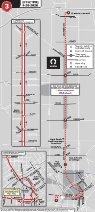
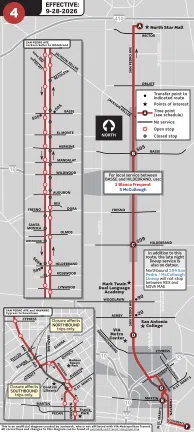
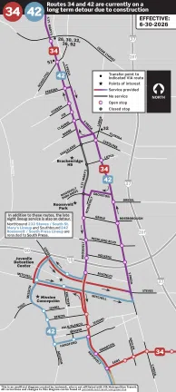
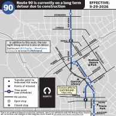
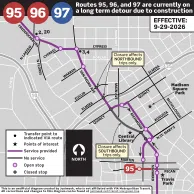
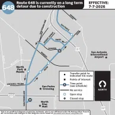
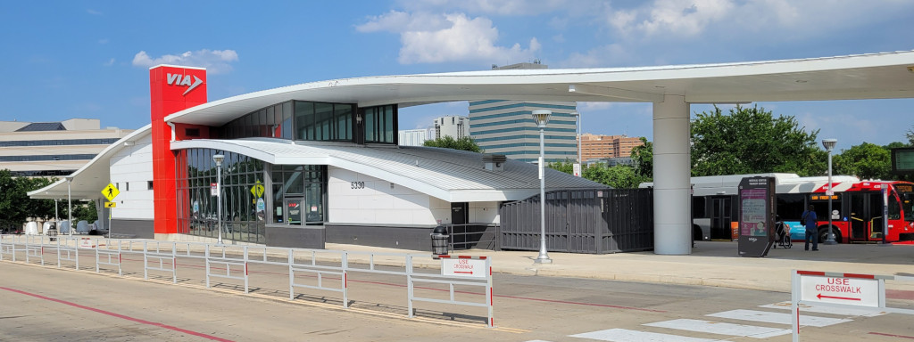
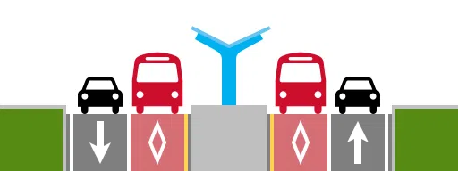
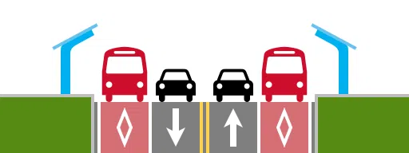
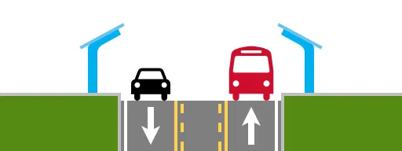

|
PASSENGER WARNING As always, exercise extreme caution when walking in the proximity of a construction zone, and be aware that your bus may not stop in the same place you expect it to on any given day. |
Due to closures required to continue the construction of the Green Line, the following routes currently have stop closures and detours:
Additionally, you can find diagrams that visually mark all stop closures in the table below. Just click on any of them to see an enlarged view of the maps.
|
San Pedro Skip
LAST UPDATE: September 29, 2026 at 12:00pm
3 reroute diagrams Currently active detours [Click to enlarge] |
|
San Pedro Frequent
LAST UPDATE: September 29, 2026 at 12:00pm
4 reroute diagrams Currently active detours [Click to enlarge] |
|
South St. Mary's Frequent
LAST UPDATE: June 30, 2026
34 reroute diagram Click to enlarge |
|
Roosevelt
LAST UPDATE: July 8, 2026
42 reroute diagramClick to enlarge |
|
Woodlawn
LAST UPDATE: September 29, 2026 at 12:00pm
90 reroute diagram Currently active detours [Click to enlarge] |
|
Fredericksburg Frequent
LAST UPDATE: September 29, 2026 at 12:00pm
95 reroute diagram Currently active detours [Click to enlarge] |
|
Vance Jackson Frequent
LAST UPDATE: September 29, 2026 at 12:00pm
96 reroute diagramCurrently active detours [Click to enlarge] |
|
West Avenue
LAST UPDATE: September 29, 2026 at 12:00pm
97 reroute diagramCurrently active detours [Click to enlarge] |
|
North Star / Stone Oak
LAST UPDATE: July 7, 2026
648 reroute diagram Currently active detours [Click to enlarge] |

Bus station: These stations are integrated with a larger facility that features amenities such as customer service, restrooms, indoor waiting areas, and transfers to other routes

Median-running bus lane: These stations are in the center of the roadway and divide the two directions of traffic, accessible by using a nearby signalized crosswalk that intersects with an entrance to the station. The lane directly next to the station is a bus-only lane that only allows buses and emergency vehicles to enter.

Curb-running bus lane: These stations are on the right side of the roadway, accessible by simply using the sidewalk. The lane directly next to the station is a bus-only lane that only allows buses and emergency vehicles to travel on it. Additionally, any regular passenger vehicle or truck that intends to make a right turn onto any driveway or intersecting street must enter the bus lane, decelerate, and execute the turn.

Mixed traffic lane: These stations are on the right side of the roadway, accessible by simply using the sidewalk. The lane directly next to the station is a standard general-purpose vehicle lane that is open to all vehicles. Examples of this station type exist in San Antonio along Fredericksburg Road that are in use by Prímo 100 and Prímo 103.
The list of connections in this table shows what is currently available along the corridor, and does not show what connections will be made available or what will be removed in the future. However, the following routes will be directly replaced by the Green Line, and thus are omitted from the table:
| Station | Location | Type | Connections | Notable Destinations |
|---|---|---|---|---|
| San Antonio International Airport | SAT Terminal B | Mixed traffic lane |
|
|
| Sahara | Isom Rd. between Oasis Dr. & Sahara Dr. | Mixed traffic lane | ||
| Social Security | Isom Rd. between Contessa Dr. & San Pedro Ave. | Curb-running bus lane |
|
|
| North Star Transit Center | 7538 San Pedro Ave. | Bus station |
|
|
| Rampart | San Pedro Ave. & Rampart Dr. | Median-running bus lane | ||
| Oblate | San Pedro Ave. & Oblate Dr. | Median-running bus lane |
|
|
| Jackson Keller | San Pedro Ave. & Jackson Keller Rd. | Median-running bus lane | ||
| Basse | San Pedro Ave. & Basse Rd. | Median-running bus lane | ||
| Mandalay | San Pedro Ave. & Mandalay Dr. | Median-running bus lane | ||
| Millard | San Pedro Ave. between Agnes St. & Millard St. | Median-running bus lane | ||
| Hildebrand | San Pedro Ave. & Hildebrand Ave. | Curb-running bus lane | ||
| Fulton |
Southbound: San Pedro Ave. & Fulton Ave.
Northbound: San Pedro Ave. & Eslmere Pl. |
Curb-running bus lane | ||
| Mulberry | San Pedro Ave. & Mulberry Ave. | Curb-running bus lane |
|
|
| Woodlawn | San Pedro Ave. & Woodlawn Ave. | Curb-running bus lane | ||
| San Pedro Park | San Pedro Ave. & Dewey Pl. | Median-running bus lane |
|
|
| Cypress | San Pedro Ave. & Cypress St. | Median-running bus lane |
|
|
| Marshall | San Pedro Ave. & Marshall St. | Median-running bus lane | ||
| Augusta | Navarro St. between Dallas St & Augusta St. | Curb-running bus lane |
|
|
| Pecan (Southbound only) |
N St. Mary's St. & Pecan St. | Curb-running bus lane |
|
|
| Martin (Northbound only) |
Navarro St. & Martin St. | Curb-running bus lane |
|
|
| Market (Southbound only) |
S St. Mary's St. & Market St. | Curb-running bus lane |
|
|
| Commerce (Northbound only) |
Navarro St. & Commerce St. | Curb-running bus lane |
|
|
| Durango | S St. Mary's St. & Durango Blvd. | Curb-running bus lane | ||
| Pereida | S St. Mary's St. & Pereida St. | Curb-running bus lane | ||
| Carolina | S St. Mary's St. & Carolina St. | Mixed traffic lane | ||
| Roosevelt | S St. Mary's St. & Roosevelt Park Dr. | Mixed traffic lane | ||
| Highland | S St. Mary's St. between Yellowstone St. & Highland Blvd. | Mixed traffic lane | ||
| Steves | S St. Mary's St. between I-10. & McKinley Ave. | Mixed traffic lane |